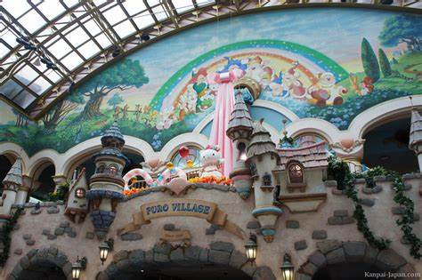

Sanrio Puroland offers a delightful array of rides, each adding its own charm to the magical experience. The 'Magical Carousel' beckons visitors to a whimsical journey, where Hello Kitty and her friends come to life amidst a burst of colors and lively music. For a more laid-back adventure, 'Gudetama's Lazy River' invites guests to drift along the gentle waters, enjoying the serene atmosphere with the lovable lazy egg, Gudetama. Thrill-seekers can embark on the exhilarating 'Hello Kitty's Adventure Coaster,' a roller coaster that takes riders on a thrilling journey through twists and turns with Hello Kitty and her friends. Meanwhile, 'My Melody's Tea Cups' promise a whimsical and spinning delight, inviting guests to twirl in teacups adorned with My Melody's charming designs. Each ride adds its unique touch to the enchanting world of Sanrio characters, creating lasting memories for visitors of all ages.
Sanrio Puroland is a theme park dedicated to Hello Kitty and other characters created by Sanrio. Located in Tama, Tokyo, Japan, the park features various attractions, live shows, and interactive experiences for visitors of all ages.
Ride 1: Magical Carousel
Experience the enchantment of the Magical Carousel, where Hello Kitty and her friends come to life in a whirl of colors and music. This classic carousel ride is perfect for visitors of all ages.
Ride 2: Gudetama's Lazy River
Drift along the Lazy River with Gudetama and enjoy a relaxing journey through the park. This gentle water ride is a great way to cool off and take in the scenery.

Ride 3: Hello Kitty's Adventure Coaster
Embark on a thrilling adventure with Hello Kitty's Adventure Coaster. Zoom through twists and turns with Hello Kitty and her friends for an unforgettable roller coaster experience.
Ride 4: My Melody's Tea Cups
Spin and twirl in My Melody's Tea Cups. Enjoy a whimsical ride with spinning teacups adorned with My Melody's charming designs, creating a delightful experience for guests.